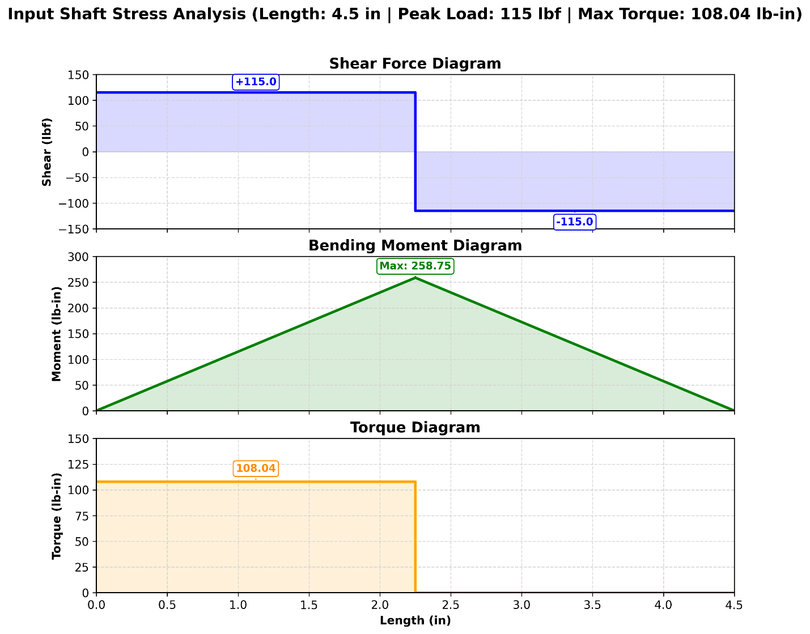
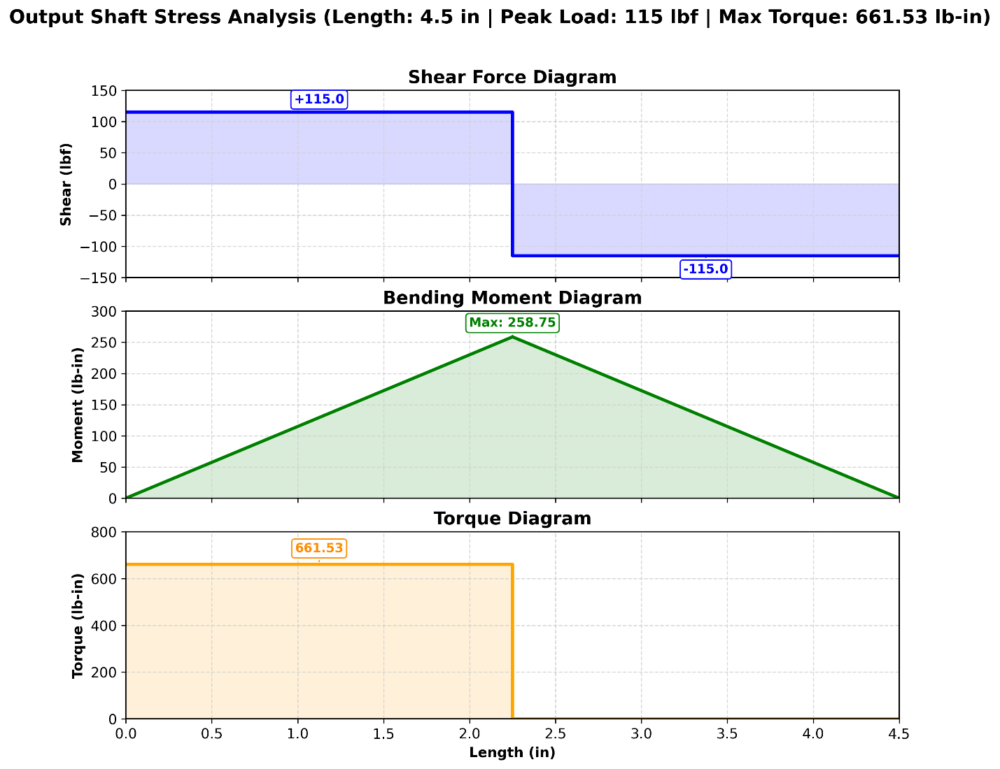

Mechanical design · Power transmission
Rehabilitation Treadmill Gearbox
A single-stage spur gearbox that reduces a 1,750 rpm, 3 hp motor to 280.1 rpm while fitting a constrained rehabilitation-treadmill envelope.
Engineering resultThe final 6.25:1 configuration passed gear stress, shaft fatigue, bearing-life, and deflection checks. I owned the CAD assembly, layout validation, and 2D drawing package.
- Context
- MSE 3380B team project
- Team
- 3 students
- Reduction
- 1,750 → 280.1 rpm
- Tools
- SolidWorks, engineering drawings, Shigley/AGMA analysis
Transmit the worst-case treadmill load inside a 12–14 × 8 × 8 in packaging envelope.
A 32/200-tooth spur gearset, keyed AISI 4340 shafts, straddle-mounted bearings, and a split aluminum housing.
The analytical design met the stated safety-factor, bearing-life, and shaft-deflection criteria.
One reduction stage, traceable end to end
The gear ratio converts motor speed into the torque required at the treadmill roller. The shaft locations in the CAD assembly match the same load path used for analysis.
1,750 rpm · 108.04 lb-in
32 DP · 20° pressure angle
280.1 rpm · 661.53 lb-in
From requirements to drawing-ready assembly
My work centred on the physical definition of the gearbox: CAD modelling, interface checks, assembly-layout validation, and manufacturing documentation.
The selected geometry cleared each design check
These are the detailed calculation-table results from the team report. They show why the chosen gears, shafts, and bearing layout were retained in the final CAD assembly.
| Design check | Result | Status |
|---|---|---|
| Gear bending safety factor | 3.15 | Pass |
| Gear contact safety factor | 3.34 | Pass |
| Input shaft fatigue safety factor | 3.05 | Pass |
| Output shaft fatigue safety factor | 3.94 | Pass |
| Input shaft deflection | 0.00194 in | Pass |
| Output shaft deflection | 0.00094 in | Pass |
Why the layout matters
- Bearings on both sides of each gear reduce overhung loading and support alignment.
- The split clamshell housing enables shaft-and-gear installation without trapping components.
- The selected shaft diameters remain below the 0.005 in deflection limit.
- Commercial bearings exceeded the required dynamic load ratings.
Shaft loading used to verify the assembly
The two diagrams preserve the direction, magnitude, and location of the shear, bending moment, and transmitted torque used in the shaft checks.


This was a three-person design project. I owned CAD modelling, assembly-layout validation, 2D drawing preparation, and appendix organization. Gear, shaft, bearing, fatigue, and deflection calculations are presented here as team results. The submitted report documents an analytical and CAD design; it does not claim a fabricated or physically tested prototype.